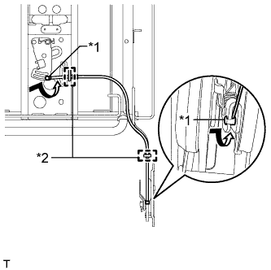
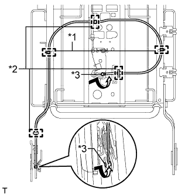
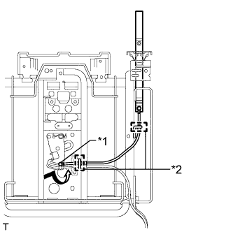
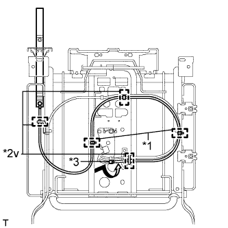
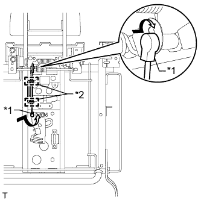
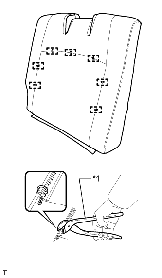
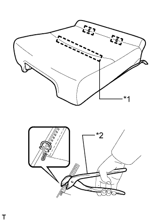

ЗАДНЕЕ СИДЕНЬЕ № 2 В СБОРЕ (левое сиденье с электроприводом) > ПОВТОРНАЯ СБОРКА |
| 1. УСТАНОВИТЕ НОЖКУ ЛЕВОГО СИДЕНЬЯ № 3 В СБОРЕ |
Закрепите 4 фиксатора и установите нижний коврик подушки левого сиденья на ножку сиденья № 3.
| 2. УСТАНОВИТЕ НОЖКУ СИДЕНЬЯ № 2 В СБОРЕ (с правой стороны) |
Закрепите 4 фиксатора и установите нижний коврик подушки правого сиденья на ножку сиденья № 2.
| 3. УСТАНОВИТЕ ЖГУТ ЭЛЕКТРОПРОВОДКИ ЛЕВОГО ЗАДНЕГО СИДЕНЬЯ № 2 |
Введите в зацепление зажимы жгута проводов, чтобы закрепить жгут проводов сиденья.
Подсоедините разъем.
| 4. УСТАНОВИТЕ КАРКАС СПИНКИ ЛЕВОГО СИДЕНЬЯ № 3 В СБОРЕ |
Установите каркас спинки сиденья и закрепите его 4 болтами "TORX" с помощью торцевого ключа "TORX" T45.
| 5. УСТАНОВИТЕ ТРОС ФИКСАЦИИ ЛЕВОГО ЗАДНЕГО СИДЕНЬЯ |
|  |
Скрутите концы 2 тросов в направлении, показанном стрелкой, чтобы подсоединить их.
| *1 | Наконечник троса |
| *2 | Хомут |
Присоедините 2 зажима, чтобы закрепить трос.
| 6. УСТАНОВИТЕ ТРОС ФИКСАЦИИ ПРАВОГО ЗАДНЕГО СИДЕНЬЯ (с правой стороны) |
|  |
Скрутите концы 2 тросов в направлении, показанном стрелкой, чтобы подсоединить их.
| *1 | Бандаж жгута |
| *2 | Зажим |
| *3 | Наконечник троса |
Присоедините 3 зажима, чтобы закрепить трос.
Установите 2 новых бандажа жгута.
| 7. УСТАНОВИТЕ РЕМЕНЬ РАЗБЛОКИРОВКИ ЛЕВОГО ЗАДНЕГО СИДЕНЬЯ В СБОРЕ |
|  |
Скрутите конец троса в направлении, показанном стрелкой, чтобы подсоединить его.
| *1 | Наконечник троса |
| *2 | Хомут |
Присоедините 2 зажима, чтобы закрепить трос.
| 8. УСТАНОВИТЕ РЕМЕНЬ РАЗБЛОКИРОВКИ ПРАВОГО ЗАДНЕГО СИДЕНЬЯ В СБОРЕ (с правой стороны) |
|  |
Скрутите конец троса в направлении, показанном стрелкой, чтобы подсоединить его.
| *1 | Бандаж жгута |
| *2 | Зажим |
| *3 | Наконечник троса |
Присоедините 3 зажима, чтобы закрепить трос.
Установите 2 новых бандажа жгута проводов.
| 9. УСТАНОВИТЕ НАРУЖНУЮ ОТКИДНУЮ КРЫШКУ ЛЕВОГО ЗАДНЕГО СИДЕНЬЯ № 2 |
Введите в зацепление 2 захвата и направляющую, чтобы установить крышку.
Заверните винт.
| 10. УСТАНОВИТЕ ВНУТРЕННЮЮ ОТКИДНУЮ КРЫШКУ ЛЕВОГО ЗАДНЕГО СИДЕНЬЯ № 2 |
Введите в зацепление 5 захватов, чтобы установить крышку.
| 11. УСТАНОВИТЕ ЛЕВУЮ ТЯГУ СИДЕНЬЯ № 3 В СБОРЕ |
Присоедините 4 направляющих и 2 захвата, чтобы закрепить тягу ножки сиденья.
Установите 3 фиксатора.
| 12. УСТАНОВИТЕ НАКЛАДКУ НОЖКИ ЛЕВОГО ЗАДНЕГО СИДЕНЬЯ |
Закрепите 5 фиксаторов и 3 крепления, чтобы установить накладку.
Установите фиксатор.
| 13. УСТАНОВИТЕ КАРКАС ПОДУШКИ ЛЕВОГО СИДЕНЬЯ № 2 В СБОРЕ |
Установите каркас подушки сиденья и закрепите его 4 болтами "TORX" с помощью торцевого ключа "TORX" T40.
Вытяните каркас подушки сиденья.
Подсоедините жгут проводов и закрепите соединение болтом.
| 14. УСТАНОВИТЕ НАРУЖНУЮ ОТКИДНУЮ КРЫШКУ ЛЕВОГО ЗАДНЕГО СИДЕНЬЯ № 3 |
Введите в зацепление 2 захвата и направляющую, чтобы установить крышку.
Заверните винт.
| 15. УСТАНОВИТЕ ВНУТРЕННЮЮ ОТКИДНУЮ КРЫШКУ ЛЕВОГО ЗАДНЕГО СИДЕНЬЯ № 3 |
Введите в зацепление 4 захвата, чтобы установить крышку.
| 16. УСТАНОВИТЕ КРАЕВОЕ УКРЕПЛЕНИЕ СПИНКИ ЗАДНЕГО СИДЕНЬЯ |
Введите в зацепление 4 захвата, чтобы закрепить 2 укрепления.
| 17. УСТАНОВИТЕ ПОДГОЛОВНИК ЗАДНЕГО СИДЕНЬЯ В СБОРЕ |
Закрепите подголовник 3 гайками.
| 18. УСТАНОВИТЕ ТРОС УПРАВЛЕНИЯ ПОДГОЛОВНИКОМ ЗАДНЕГО СИДЕНЬЯ |
|  |
Скрутите концы 2 тросов в направлении, показанном стрелкой, чтобы закрепить их.
| *1 | Наконечник троса |
| *2 | Хомут |
Присоедините 2 зажима, чтобы закрепить трос.
| 19. УСТАНОВИТЕ КРЫШКУ ПОДГОЛОВНИКА ЗАДНЕГО СИДЕНЬЯ |
Введите в зацепление 2 захвата и направляющую, чтобы установить крышку.
Заверните 2 винта.
| 20. УСТАНОВИТЕ ОБИВКУ СПИНКИ СИДЕНЬЯ № 2 |
Введите в зацепление 2 захвата, чтобы установить крышку.
| 21. УСТАНОВИТЕ КРАЕВОЕ УКРЕПЛЕНИЕ СПИНКИ ЗАДНЕГО СИДЕНЬЯ № 2 |
Закрепите краевое укрепление на подушке спинки сиденья новыми закрепками.
| 22. УСТАНОВИТЕ ОБИВКУ СПИНКИ ЛЕВОГО СИДЕНЬЯ № 3 В СБОРЕ |
|  |
Установите обивку на подушку спинки сиденья и закрепите ее новыми витковыми пружинами, используя щипцы для витковых пружин.
| *1 | Щипцы для витковых пружин |
| 23. УСТАНОВИТЕ ОБИВКУ СПИНКИ СИДЕНЬЯ ВМЕСТЕ С ПОДУШКОЙ |
Введите в зацепление 8 фиксаторов.
Присоедините крепления, чтобы установить обивку спинки сиденья с подушкой.
| 24. УСТАНОВИТЕ ДЕРЖАТЕЛЬ ОБИВКИ ЗАДНЕГО СИДЕНЬЯ № 1 |
Проденьте ленту через отверстие держателя.
Присоедините направляющую, чтобы закрепить держатель.
Заверните 2 винта.
| 25. УСТАНОВИТЕ КРЕПЛЕНИЕ ЗАМКА СПИНКИ ЗАДНЕГО СИДЕНЬЯ |
Установите крепление замка.
| 26. УСТАНОВИТЕ ПАНЕЛЬ СПИНКИ ЛЕВОГО ЗАДНЕГО СИДЕНЬЯ В СБОРЕ |
Введите в зацепление 7 фиксаторов, чтобы установить панель.
| 27. УСТАНОВИТЕ ЛЕВУЮ НИЖНЮЮ НАПРАВЛЯЮЩУЮ СИДЕНЬЯ |
Закрепите направляющую 2 болтами.
| 28. УСТАНОВИТЕ ВНУТРЕННЮЮ НАКЛАДКУ ПЕТЛИ ПОДУШКИ ПРАВОГО ЗАДНЕГО СИДЕНЬЯ |
Введите в зацепление направляющую, чтобы установить накладку.
Установите фиксатор и вверните винт.
| 29. УСТАНОВИТЕ ВНУТРЕННЮЮ НАКЛАДКУ ПЕТЛИ ПОДУШКИ ЛЕВОГО ЗАДНЕГО СИДЕНЬЯ |
Введите в зацепление направляющую, чтобы установить накладку.
Установите фиксатор и вверните винт.
| 30. УСТАНОВИТЕ НАКЛАДКУ НОЖЕК ЛЕВОГО ЗАДНЕГО СИДЕНЬЯ № 3 |
Введите в зацепление 2 захвата, чтобы установить крышку.
| 31. УСТАНОВИТЕ МОЛДИНГ ПОДУШКИ ЗАДНЕГО СИДЕНЬЯ № 2 |
Введите в зацепление 2 захвата, чтобы установить молдинг.
Заверните 2 винта.
| 32. УСТАНОВИТЕ ВНУТРЕННЕЕ КРАЕВОЕ УКРЕПЛЕНИЕ ПОДУШКИ ЛЕВОГО ЗАДНЕГО СИДЕНЬЯ |
Закрепите краевое укрепление на подушке сиденья новыми закрепками.
| 33. УСТАНОВИТЕ ОБИВКУ ПОДУШКИ ЛЕВОГО СИДЕНЬЯ № 3 В СБОРЕ |
|  |
Установите обивку подушки сиденья на подушку сиденья и закрепите ее новыми витковыми пружинами, используя щипцы для витковых пружин.
| *1 | Фиксатор |
| *2 | Щипцы для витковых пружин |
Присоедините фиксатор.
| 34. УСТАНОВИТЕ ОБИВКУ ПОДУШКИ СИДЕНЬЯ ВМЕСТЕ С ПОДУШКОЙ |
Подсоедините 2 крепления, чтобы установить обивку подушки сиденья вместе с подушкой.
Введите в зацепление 2 крепления.
Введите в зацепление 2 крепления, чтобы закрыть обивку.
Застегните 2 застежки.
Присоедините 2 фиксатора.
| 35. УСТАНОВИТЕ МОЛДИНГ ПОДУШКИ ЗАДНЕГО СИДЕНЬЯ № 1 |
Введите в зацепление 4 направляющих и 2 захвата, чтобы установить молдинг.
Установите 2 фиксатора.
| 36. УСТАНОВИТЕ ЭБУ СКЛАДЫВАНИЯ СИДЕНЬЯ |
Закрепите ЭБУ 2 гайками.
Подсоедините 2 разъема.
| 37. УСТАНОВИТЕ ЗАМОК РЕМНЯ БЕЗОПАСНОСТИ ЛЕВОГО ЗАДНЕГО СИДЕНЬЯ № 2 В СБОРЕ |
Установите замок ремня безопасности в сборе и закрепите его болтом с помощью торцевого ключа "TORX" T45.
| 38. УСТАНОВИТЕ НИЖНЮЮ НАКЛАДКУ ПЕТЛИ ПОДУШКИ ПРАВОГО ЗАДНЕГО СИДЕНЬЯ |
Введите в зацепление 2 захвата, чтобы установить крышку.
Заверните 2 винта.
| 39. УСТАНОВИТЕ НИЖНЮЮ НАКЛАДКУ ПЕТЛИ ПОДУШКИ ЛЕВОГО ЗАДНЕГО СИДЕНЬЯ |
Присоедините направляющую и 2 захвата, чтобы закрепить щиток.
Заверните 2 винта.
| 40. УСТАНОВИТЕ КОЛПАЧОК |
Установите 2 крышки.